Publications
Book
-
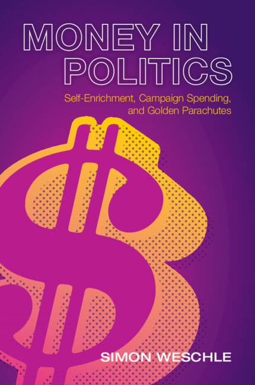
Money in Politics: Self-Enrichment, Campaign Spending, and Golden Parachutes
Cambridge University Press. 2022.
PublisherIn politics, money is often the name of the game. Politicians enrich themselves while in office, spend campaign money to finance their re-election, and accept lucrative "golden parachute" jobs after leaving office. Money in Politics argues that these different forms of capital are part of a common system and should be analyzed in a single framework. The book advances a comparative theory that shows how self-enrichment, campaign spending, and golden parachute jobs are connected to each other. This theory explains when and how money enters politics, ultimately illuminating that a change in one form affects the other types and revealing the consequences this has for democracy. The book uses a wide range of evidence from countries around the world, including causally identified quantitative studies, qualitative cross-national comparisons, and original survey experiments. Enlightening and instructive, this book shows that we can only fully comprehend the role of money in politics when we view it as a common system to be analyzed and critiqued.
Articles and Chapters
-
Persuasion in the Political Marketplace: How Firms Snitch on Rivals to Encourage Regulatory Enforcement
Strategic Management Journal. 2026. 47(8): 2306-2340. With Benjamin Barber and Gianluigi Giustiziero.
Paper Journal Appendix Replication InformationWe study an important, but largely overlooked, non-market strategy used by firms in the enforcement stage of policy: "snitching," that is, providing intelligence about potential violations of their rivals in an attempt to persuade regulators to fine them. Building on political marketplace theory, we develop and test a theoretical model of how firms use snitching during regulatory enforcement. We show that in equilibrium, firms snitch when the rival's violations are likely to cause significant harm to the population. We then derive several boundary conditions outlining when firms will engage in more or less snitching. We find support for our theory in panel data on enforcement actions by the U.S. Environmental Protection Agency for more than 8000 facilities over 12 years. -
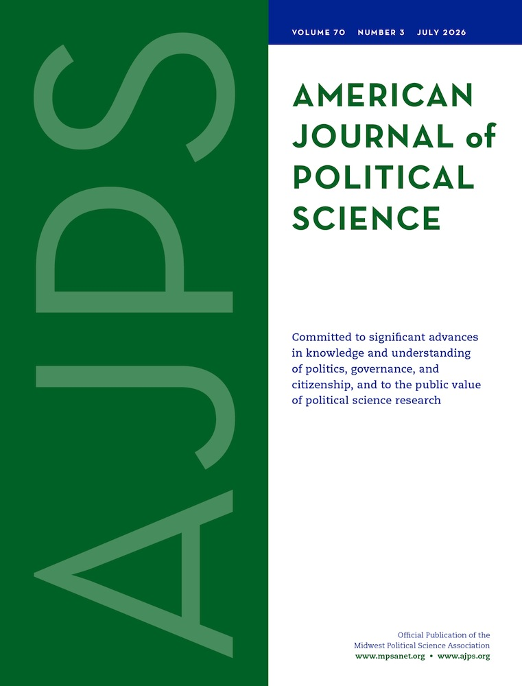
The Super-Rich and the Rest: Campaign Finance Pressures and the Wealth of Politicians
American Journal of Political Science. 2026. 70(3): 1115-1131. With Lucia Motolinia and Marko Klašnja.
Paper Journal Appendix Replication PackageWe provide a comprehensive theoretical and empirical account of the relationship between campaign finance pressures and the wealth of politicians. We argue that the heavily right-skewed wealth distributions observed in contemporary societies translate into similarly skewed distributions of campaign resources. Such unequal resources mean that greater pressures to spend on campaigns disproportionately benefit the very wealthy. We also identify several conditions that determine the extent of the financing advantages of the very rich, and at whose expense they accrue. We test our propositions using a unique original data set on the wealth of more than 23,000 national legislators from 41 countries, as well as by exploiting quasi-random variation in financing pressures provided by recent campaign finance reforms in Brazil and Chile. The analyses consistently show that greater financing pressures lead to greater shares of wealthy, and especially very wealthy legislators, and that these advantages vary in ways consistent with our predictions.
Media Coverage: The Price of Power -
Does Political Sophistication Moderate How Citizens Use Information to Infer Left-Right Distances between Parties?
Journal of Elections, Public Opinion and Parties. 2025. 35(2): 308-325. With Timea Balogh, Will Horne, James Adams, and Christopher Wlezien.
Paper Journal Appendix Replication PackageResearch identifies numerous factors associated with citizens' perceptions of party ideologies, including the Left-Right orientations of parties' election manifestos, governing coalition arrangements, and media reports of party elites' interactions. We analyze whether citizens' reliance on these factors varies with their levels of education and political knowledge. In analyses of 50 election surveys from 18 countries between 2002 and 2015, we find that more politically sophisticated citizens attach (modestly) more weight to parties' election manifestos and media reports of political elites' interactions, but no evidence that sophistication moderates citizens' reactions to governing coalition arrangements. There thus appears to be far more homogeneity than heterogeneity in the structure of party placement perceptions -
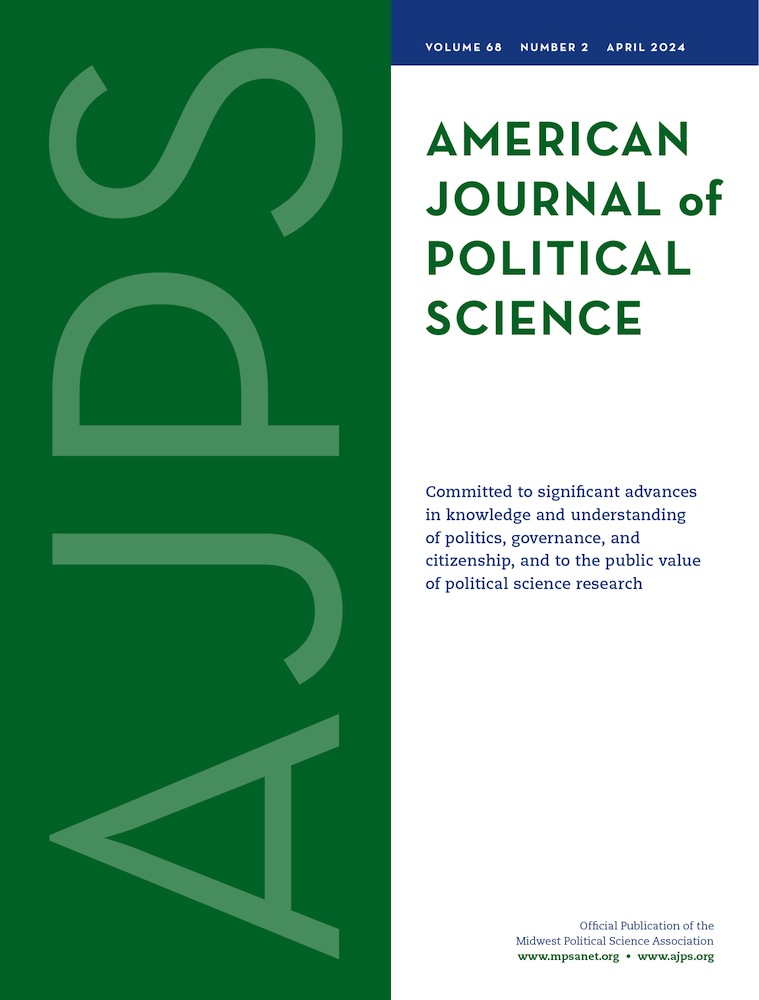
Politicians' Private Sector Jobs and Parliamentary Behavior
American Journal of Political Science. 2024. 68(2): 390-407.
Paper Journal Appendix Replication Package I4R Replication ReportAbout 80% of democracies allow legislators to be employed in the private sector while they hold office. However, we know little about the consequences of this practice. In this article, I use newly assembled panel data of all members of the United Kingdom House of Commons and a difference-in-differences design to investigate how legislators change their parliamentary behavior when they have outside earnings. When holding a private sector job, members of the governing Conservative Party, who earn the vast majority of outside income, change whether and how they vote on the floor of parliament as well as increase the number of written parliamentary questions they ask by 60%. For the latter, I demonstrate a targeted pattern suggesting that the increase relates to their employment. The article thus shows that one of the most common, and yet least studied, forms of money in politics affects politicians' parliamentary behavior
Media Coverage: The Bunker Podcast, Sky News, The Loop, AJPS Blog -
 What Drives Perceptions of Partisan Cooperation?
What Drives Perceptions of Partisan Cooperation?
Political Science Research and Methods. 2024. 12(4): 888-896. With Lie Philip Santoso and Randolph T. Stevenson.
Paper Journal Appendix Replication PackageWhat drives voters' perceptions of partisan cooperation? In this note, we investigate whether voters have accurate beliefs about which parties regularly cooperate with one another, and whether these beliefs follow the real-time portrait of cooperation and conflict between parties that is reported in the news. We combine original survey data of voters' perceptions of party cooperation in four countries over two time periods with a measure of parties' public relationships as reported by the media. We find that voters' perceptions of cooperation and conflict among parties do reflect actual patterns of interactions. This pattern holds even after controlling for policy differences between parties as well as joint cabinet membership. Furthermore, we show that the impact of contemporary events on cooperation perceptions is most pronounced for voters who monitor the political news more carefully. Our findings have important implications for partisan cooperation and mass–elite linkages. Specifically, we find that contrary to the usual finding that voters are generally uninformed about politics, voters hold broadly accurate beliefs about the patterns of partisan cooperation, and importantly, these views track changes in relevant news. This reflects positively on the masses' capacities to infer parties' behaviors. -
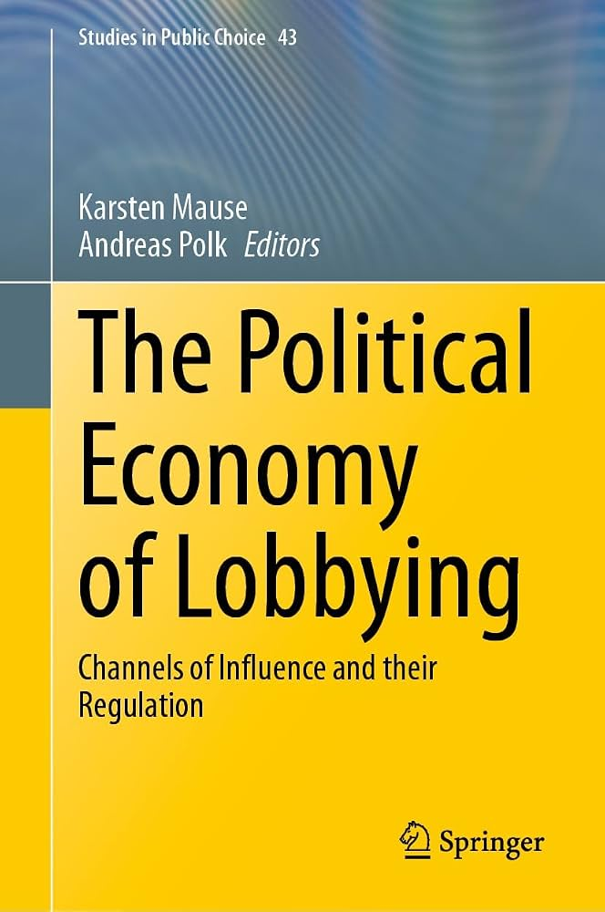
Campaign Finance
In: The Political Economy of Lobbying: Channels of Influence and their Regulation, edited by Karsten Mause and Andreas Polk. 2024. Springer.
Chapter PublisherWhile most voters and politicians are convinced that campaign finance shapes policy and elections, studies typically have found small or no effects. However, better data and a greater focus on causal identification have transformed the literature in recent years. In this chapter, I take stock of our current understanding of campaign finance in democratic countries: Who are the campaign donors and what motivates them? How does campaign finance affect policy? And how does campaign spending affect elections? I argue that the recent findings chip away at the old conventional wisdom that campaign spending has little impact, and instead supports the view that it has important consequences for policy and election outcomes. I also point to gaps in our understanding and highlight areas for future research. -
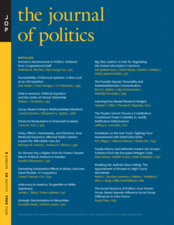
Parliamentary Positions and Politicians' Private Sector Earnings: Evidence from the UK House of Commons
Journal of Politics. 2021. 83(2): 706-721.
Paper Journal Appendix Replication PackageMost democracies allow their members of parliament to concurrently be employed in the private sector. A widespread worry is that politicians leverage their current or past posts within parliament, for example, as ministers or committee chairs, to gain lucrative jobs. However, we know little about whether "moonlighting" income is indeed driven by these positions. I analyze comprehensive new panel data on the private sector earnings of all members of the UK House of Commons during 2010–16. Focusing on within-legislator variation, I find that currently holding an influential position does not cause an increase in income from outside jobs. Politicians do see higher earnings soon after leaving their parliamentary posts, but this effect is concentrated among cabinet ministers. The article advances the literature by identifying which political posts lead to financial benefits in the private sector—and when.
Media Coverage: Sky News, Tatler -
Campaign Finance Legislation and the Supply-Side of the Revolving Door
Political Science Research and Methods. 2021. 9(2): 365-379.
Paper Journal Appendix Replication PackageExisting research on the revolving door examines why employers hire former politicians. I complement this demand-side approach by demonstrating the importance of the supply-side. In particular, I argue that one important institutional factor that shapes politicians' willingness to leave office for a private sector job is campaign finance legislation. Less restrictive rules increase campaign spending for incumbents, which makes revolving door employment less attractive. Empirically, I use novel data from the US states and a difference-in-differences design to show that the exogenous removal of campaign finance legislation through Citizens United reduced the probability that incumbents left office to work as lobbyists. The supply-side approach provides insights into comparative differences in the prevalence of the revolving door. -
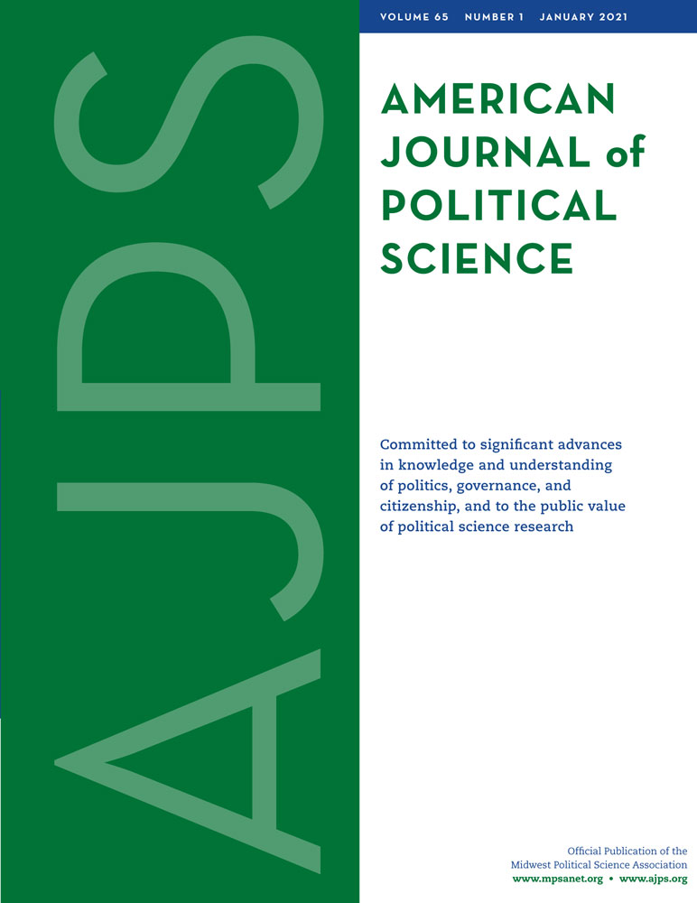
Elite Interactions and Voters' Perceptions of Parties' Policy Positions
American Journal of Political Science. 2021. 65(1): 101-114. With James Adams and Christopher Wlezien.
Paper Journal Appendix Replication PackageRecent research documents that voters infer that governing coalition partners share similar ideologies, independently of these parties' actual policy statements. We argue that citizens estimate party positions from more general forms of interparty cooperation and conflict, particularly near the times of national elections. We analyze tens of thousands of media reports on elite interactions from 13 Western democracies between 2001 and 2014, and show that—controlling for coalition arrangements and for the policy tones of parties' election manifestos—voters infer greater left–right agreement between pairs of parties that have more cooperative public relationships, but that this "cooperation effect" is only evident near the times of national elections. Our findings have implications for parties' policy images and for mass–elite linkages. -
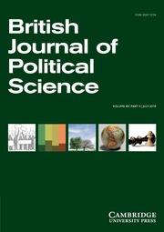
The Impact of Economic Crises on Political Representation in Public Communication: Evidence from the Eurozone
British Journal of Political Science. 2019. 49(3): 1097-1116.
Paper Journal Appendix Replication PackageExternal threats such as war have been shown to disrupt representation as politicians "put politics aside" and cooperate across cleavages. This article examines whether a severe economic crisis can have a similar effect. It introduces a new approach that provides a spatial representation of how political parties represent societal actors in their public interactions, based on more than 140,000 machine coded news events from eleven eurozone countries between 2001 and 2011. The study shows that in bad economic times, there is a compression of political representation: parties' relationships with the societal groups they are closest to become less cooperative, while their relationships with the groups they are least close to become less conflictual. -
Assessing the Impact of Non-Random Measurement Error on Inference: A Sensitivity Analysis Approach
Political Science Research and Methods. 2019. 7(2): 367-38. With Max Gallop.
Paper Journal Appendix Replication PackageMany commonly used data sources in the social sciences suffer from non-random measurement error, understood as mis-measurement of a variable that is systematically related to another variable. We argue that studies relying on potentially suspect data should take the threat this poses to inference seriously and address it routinely in a principled manner. In this article, we aid researchers in this task by introducing a sensitivity analysis approach to non-random measurement error. The method can be used for any type of data or statistical model, is simple to execute, and straightforward to communicate. This makes it possible for researchers to routinely report the robustness of their inference to the presence of non-random measurement error. We demonstrate the sensitivity analysis approach by applying it to two recent studies. -
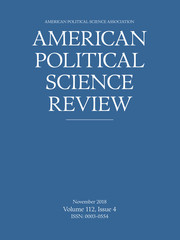
Quantifying Political Relationships
American Political Science Review. 2018. 112(4): 1090-1095.
Paper Journal Appendix Replication PackageIn this article, I introduce a method that uses large-scale event data and latent factor network models to provide a new comparative measure of cooperation and conflict in public relationships among politicians, nonpartisan political actors, and societal actors. The approach has a number of advantages over existing techniques: It captures public relationships in a multitude of venues on a continuous basis, incorporates both partisan and nonpartisan actors, allows quantifying the relationship between any pair of actors, reflects that communication is not unidirectional but rather a back and forth, and can be applied to a large number of countries over time. I apply the method to 13 Western European countries from 2001 to 2014 and demonstrate that party relationships are determined by coalition status as well as policy differences. The measure is publicly available and can be incorporated into standard research designs. -
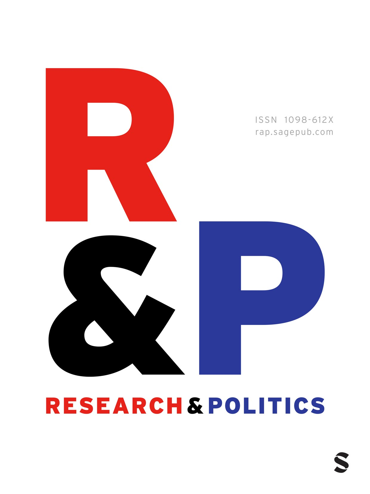
Punishing Personal and Electoral Corruption: Experimental Evidence from India
Research and Politics. 2016. 3(2): 1–6.
Paper Journal Appendix Replication PackageA growing literature examines the effect of corruption on political behavior. However, little attention has been paid so far to the fact that politicians engage in it for various reasons and with different welfare consequences. In this article, I argue that voters judge corrupt politicians differently depending on what the money is used for. I show results from a survey experiment in India in which respondents heard about a politician who accepted money for a political favor. One treatment group was told that the politician used the money to personally enrich himself (personal corruption), while the other group was informed that he used it to buy votes (electoral corruption). Respondents who received the vote buying treatment were clearly and consistently less likely to agree with a series of potential punishments. This suggests that the overall welfare consequences of corrupt exchanges are an important factor when voters decide how to judge offending politicians. -
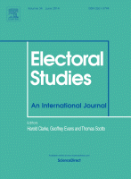
Two Types of Economic Voting: How Economic Conditions Jointly Affect Vote Choice and Turnout
Electoral Studies. 2014. 34: 39-53.
Paper JournalThe economic voting literature mostly looks at vote choice, ignoring potential effects on turnout. Studies that do focus on the latter often ignore the former, and come to contradictory conclusions. I develop a model of economic voting that jointly incorporates vote choice and abstention due to alienation or indifference. Analyzing ten elections with validated turnout data and conducting empirically informed simulations, I make two contributions. First, I show that "turnout switching" accounts for up to one third of total economic voting. This second type of economic voting is more common when the number of parties is low and responsibility is dispersed. Second, I show that a bad economy moves some people to abstain while having the opposite effect on others. The aggregate effect is ambiguous and related to macro-conditions in a non-linear way. This explains contradictory findings in the literature. -
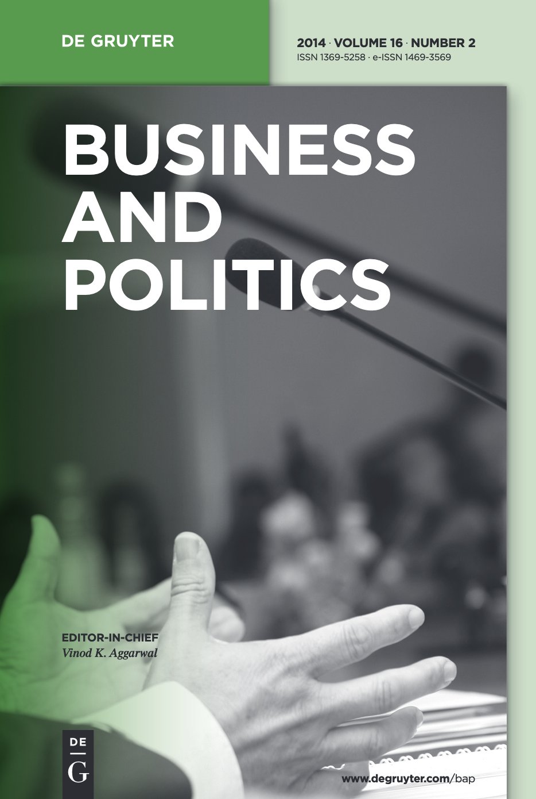
Lobbying and the Collective Action Problem: Comparative Evidence from Enterprise Surveys
Business and Politics. 2014. 16(2): 221–246. With Benjamin Barber and Jan Pierskalla.
Paper JournalIndustry lobbying is traditionally thought of as a non-excludable good subject to collective action problems that are most easily solved by concentrated industries. However, there is very little empirical support for this hypothesis. In this paper, we address a major shortcoming of existing work on the topic: Its near-exclusive reliance on data from the US. Using comparative firm-level survey data from up to 74 countries, we construct an industry-level indicator of concentration and test its effect on firms' lobbying activity. Using multilevel Extreme Bounds Analysis and Bayesian Variable Selection techniques to account for model uncertainty, we find no evidence that industry concentration is a predictor of lobbying activity. We discuss the implications of these non-findings for the literature and outline possible avenues for further research. -
Antigovernment Networks in Civil Conflicts: How Network Structures Affect Conflictual Behavior
American Journal of Political Science. 2013. 57(4): 892-911. With Nils W. Metternich, Cassy Dorff, Max Gallop, and Michael D. Ward.
Paper JournalIn this article, we combine a game-theoretic treatment of public goods provision in networks with a statistical network analysis to show that fragmented opposition network structures lead to an increase in conflictual actions. Current literature concentrates on the dyadic relationship between the government and potential challengers. We shift the focus toward exploring how network structures affect the strategic behavior of political actors. We derive and examine testable hypotheses and use latent space analysis to infer actors' positions vis-à-vis each other in the network. Network structure is examined and used to test our hypotheses with data on conflicts in Thailand from 2001 to 2010. We show the influential role of network structure in generating conflictual behavior. -
Learning from the Past and Stepping into the Future: Toward a New Generation of Conflict Prediction
International Studies Review. 2013. 15(4): 473-490. With Michael D. Ward, Nils W. Metternich, Cassy Dorff, Max Gallop, Florian M. Hollenbach, and Anna Schultz.
Paper JournalDeveloping political forecasting models not only increases the ability of political scientists to inform public policy decisions, but is also relevant for scientific advancement. This article argues for and demonstrates the utility of creating forecasting models for predicting political conflicts in a diverse range of country settings. Apart from the benefit of making actual predictions, we argue that predictive heuristics are one gold standard of model development in the field of conflict studies. As such, they shed light on an array of important components of the political science literature on conflict dynamics. We develop and present conflict predictions that have been highly accurate for past and subsequent events, exhibiting few false-negative and false-positive categorizations. Our predictions are made at the monthly level for 6-month periods into the future, taking into account the social–spatial context of each individual country. The model has a high degree of accuracy in reproducing historical data measured monthly over the past 10 years and has approximately equal accuracy in making forecasts. Thus, forecasting in political science is increasingly accurate. At the same time, by providing a gold standard that separates model construction from model evaluation, we can defeat observational research designs and use true prediction as a way to evaluate theories. We suggest that progress in the modeling of conflict research depends on the use of prediction as a gold standard of heuristic evaluation. -
Geographical Models of Crises: Evidence from ICEWS
In: Advances in Design for Cross-Cultural Activities, Part I, edited by Dylan D. Schmorrow and Denise M. Nicholson. 2013. CRC Press. With Michael D. Ward, Nils W. Metternich, Christopher Carrington, Cassy Dorff, Max Gallop, Florian M. Hollenbach, and Anna Schultz.
Chapter PublisherDeveloping political forecasting models is not only relevant for scientific advancement, but also increases the ability of political scientists to inform public policy decisions. Taking this perspective seriously, the International Crisis Early Warning System (ICEWS) was developed under a DARPA initiative to provide predictions of international crisis, domestic crisis, rebellion, insurgency, and ethnic violence in about two-dozen countries in the US PACOM Area of Responsibility. As part of a larger project coordinated by Lockheed Martin Advanced Technology Labs, a team at Duke University created a series of geographically informed statistical models for these events. The generated predictions have been highly accurate, with few false negative and false positive categorizations. Predictions are made at the monthly level for three months periods into the future. -
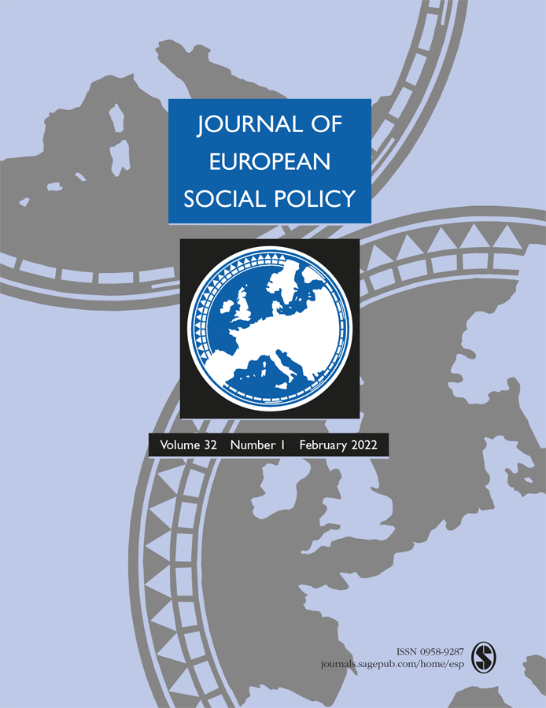
Attitudes towards Redistributive Spending in an Era of Demographic Ageing. The Rival Pressures from Age and Income in 14 OECD Countries
Journal of European Social Policy. 2009. 19(3): 195-212. With Marius R. Busemeyer and Achim Goerres.
Paper JournalThis article is about the relative impact of age and income on individual attitudes towards welfare state policies in advanced industrial democracies; that is, the extent to which the intergenerational conflict supercedes or complements intragenerational conflicts. On the basis of a multivariate statistical analysis of the 1996 ISSP Role of Government Data Set for 14 OECD countries, we find considerable age-related differences in welfare state preferences. In particular for the case of education spending, but also for other policy areas, we see that one's position in the life cycle is a more important predictor of preferences than income. Second, some countries, such as the United States, show a higher salience of the age cleavage across all policy fields; that is, age is a more important line of political preference formation in these countries than in others. Third, country characteristics matter. Although the relative salience of age varies across policy areas, we see — within one policy area — a large variance across countries.